Prism Entertainment · Press kit
Walkers
Logline
On a late-night drive through the desert, four friends are too busy roasting each other to notice that something has started following them.
At a glance
- Title
- WALKERS
- Genre
- Horror-comedy
- Runtime
- 6 min 30 sec
- Status
- In post-production, final cut Dec 2026
- Premiere
- TBD, festival run first
- Country / Language
- USA / English
- Filmed in
- Apple Valley & Burbank, California
- Camera
- ARRI Alexa 35
- Production company
- Prism Entertainment
- Director
- Christina Woo
Synopsis
Short
Four friends cut through the Mojave on a late-night road trip, trading jabs about dating apps, breakups and who's really who. When the talk turns to skinwalkers, only one of them takes it seriously. Then they stop for gas.
Long
Somewhere past midnight on an empty desert highway, Leila, Artie, Jacob and Claire are deep into a road trip and fully out of patience with each other. Claire needs a bathroom, badly. Jacob won't take anything seriously, including his relationship with Claire. Artie's heavily filtered dating-app photos are up for review. And Leila, the driver, would very much like everyone to stop saying the word "skinwalker" after dark.
When they pull into a lonely gas station, the bickering turns sharper and more personal, and nobody is paying attention to what's showing up in the side mirror.
Teaser
▶ Watch with soundStills
Tap a still to open it full size. All stills © 2026 Prism Entertainment.
Behind the scenes
Day one · Burbank
Day two · Apple Valley
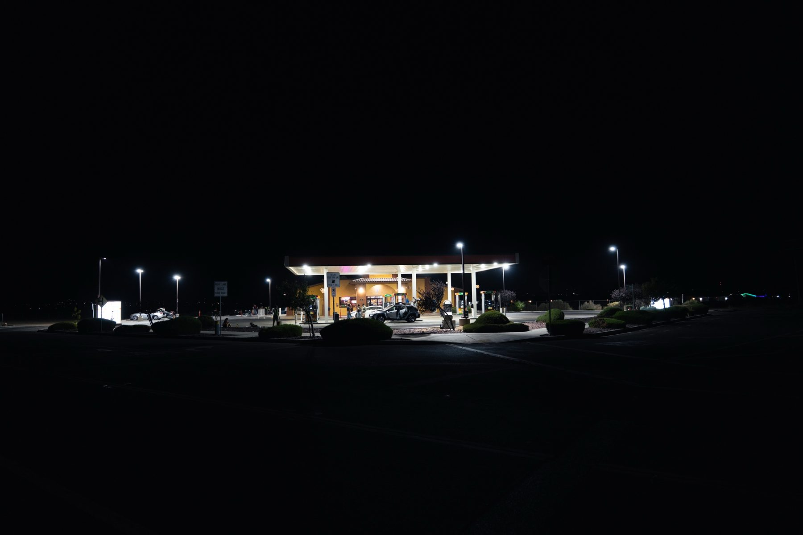
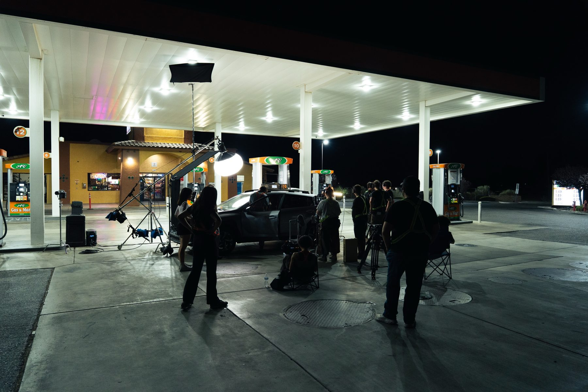
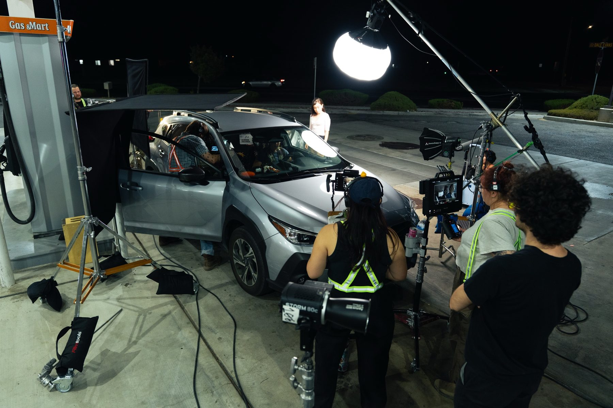
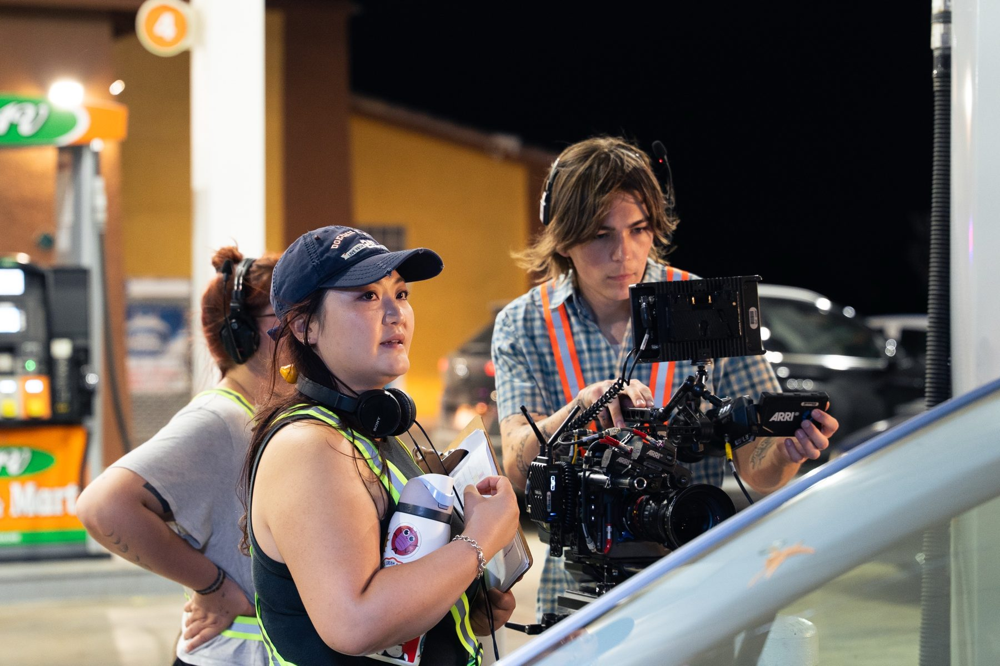
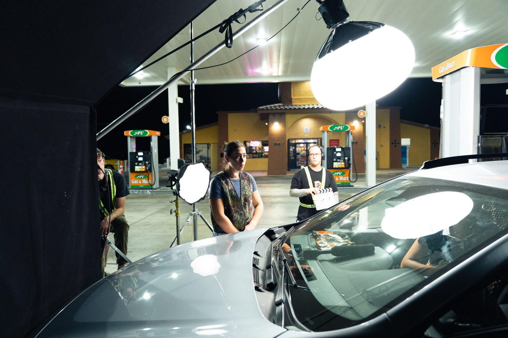
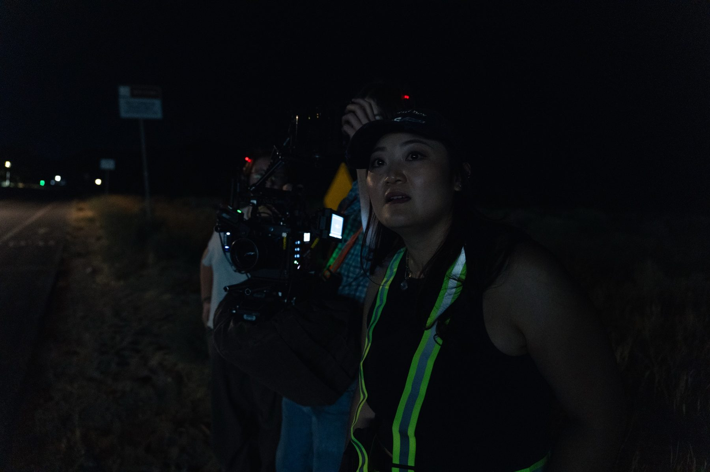
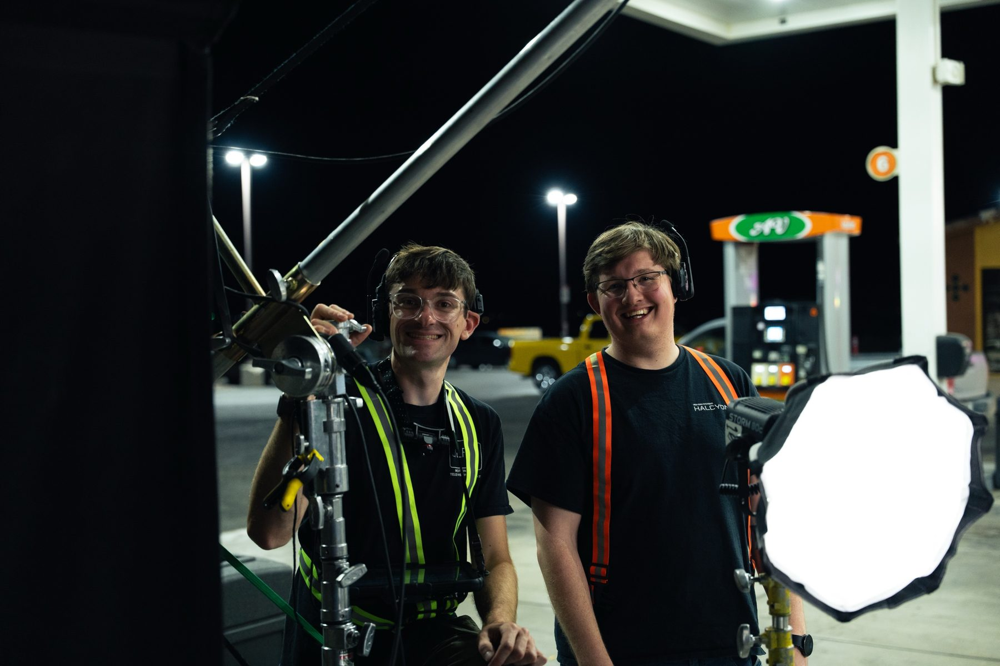
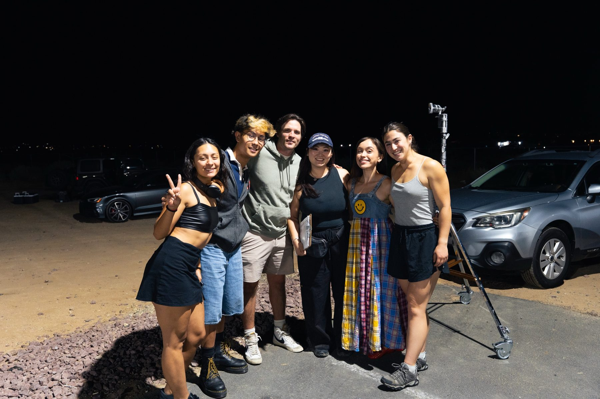
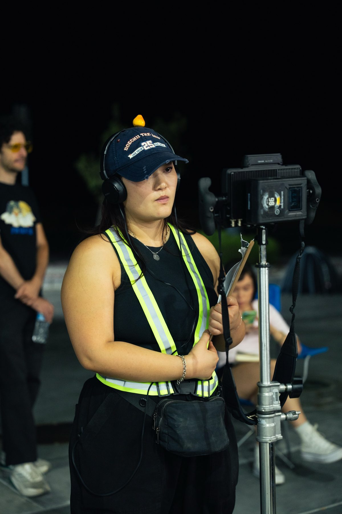
BTS photography by Logan Bole. Tap a photo to open it full size.
Director's statement
Walkers is about the bubble of the self. Four friends drive through a vast, ancient landscape, but their world is only as wide as a phone screen and the inside of a 2013 Subaru. The title works two ways. It names the thing moving in the shadows, and it describes the friends themselves: young people constantly shifting their skins to fit dating profiles, social pecking orders and other people's expectations.
I've always been drawn to inattentional blindness, the way we can miss a monster standing right in front of us because we're too busy arguing about who we are. The dialogue is fast, funny and defensive. Leila hides behind a cool-girl front, Artie edits himself to find connection, and Jacob jokes his way out of commitment.
We built the look on a contrast between the warm, cluttered car and the cold, endless desert. Inside, the frame is tight and busy, lit by phone screens and fast-food wrappers. Outside, the camera turns wide and patient, and whatever is out there is only ever glimpsed in pieces, in side mirrors and reflections.
I want audiences to walk away feeling watched by something they chose to ignore, and asking themselves who they're leaving behind while they're busy looking at themselves.
— Christina Woo, Director
Key creatives
Christina Woo
Writer & Director
Christina Woo is a writer and director who comes to live action from animation. Walkers is her first live-action film. Her writing is known for quick, dry, very online dialogue, built around characters who roast each other to avoid saying what they actually feel. [One more line: past work, a festival, or what's next.]
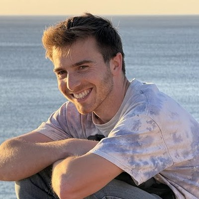
Teddy Hawke
Producer
Teddy Hawke is an independent film producer and the founder of Prism Entertainment, a production and development company that works with independent artists on micro- and low-budget projects. He came to film from marketing, and he focuses on contained, producible genre stories with room to grow. Walkers is the first step toward a skinwalker anthology series.
Karl-Erik Mills
Director of Photography
Karl-Erik Mills shot Walkers on the ARRI Alexa 35. He built the film's split look: tight, phone-lit interiors packed into a moving car, against wide, patient frames of the empty desert and a gas station glowing in the dark. [One more line: background, past work, or what he shoots.]
The series
Walkers is the first chapter of a planned anthology. In every episode, a skinwalker slips into a group, whether a friend group, a family, a workplace or a small town, and quietly takes over its pecking order. Nobody notices, because everyone is too busy performing for each other. New people, new places, same rules.
Credits
Cast
- Leila
- Sophia Delphi
- Jacob
- Luke Steinborn
- Artie
- Jammel Ives
- Claire
- Justine Faith
- Dancer / Skinwalker
- Lilly Wylde
Crew
- Written & directed by
- Christina Woo
- Producer
- Teddy Hawke
- Director of photography
- Karl-Erik Mills
- 1st assistant director
- Blaine Fuller
- Editor
- Rodrigo Calderon
- Original score
- Emily Tschirhart
- VFX artist
- John Murphy
- Colorist
- Roy Sun
- Sound mixer
- Su Lee
- Post-sound engineer
- Su Lee
- Gaffer
- Bailey Rye
- Assistant camera
- Kit Kocanda
- G&E / AC swing
- Florian Placzek
- DIT
- Rodrigo Calderon
- Art department coordinator
- Gisella Esparza
- Wardrobe
- Ev Tschirhart
- Assistant editor
- Kim Perez
- BTS photo & video
- Logan Bole
- Production assistants
- Colin Campbell, Ryan Pope, Jared Harris, Kameron Harris
- Waste management
- Linda Hawke
Poster
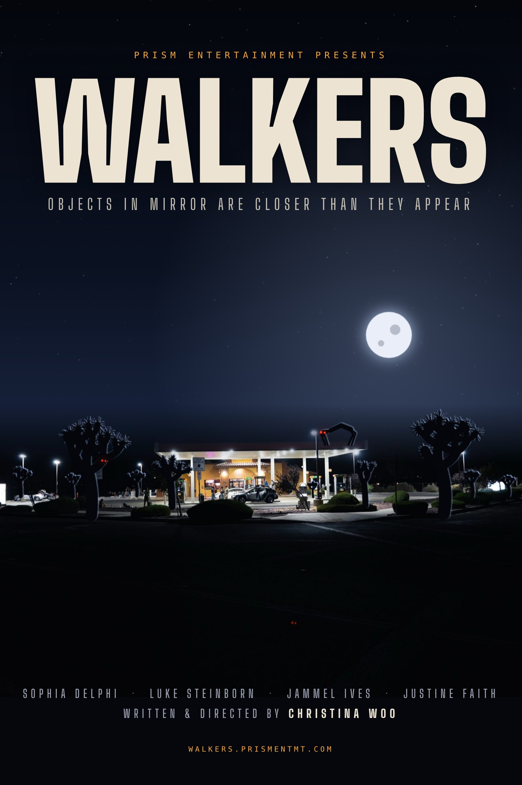
Placeholder key art. Official poster coming Dec 2026.
Contact
Press, festival and screening inquiries:
teddy@prismentmt.com
Prism Entertainment · prismentmt.com
Instagram · @walkersshortfilm